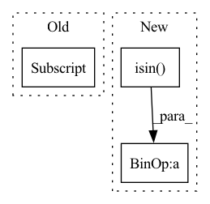

Pattern ID :24068

Before Change
// TODO: Check
corrupted_subject_based_hashed = np.apply_along_axis(_hash_triples, 1, corrupted_subject_based)
mask = np.in1d(corrupted_subject_based_hashed, all_pos_triples_hashed, invert=True)
mask = np.where(mask)[0]
corrupted_subject_based = corrupted_subject_based[mask]
corrupted_object_based_hashed = np.apply_along_axis(_hash_triples, 1, corrupted_object_based)
mask = np.in1d(corrupted_object_based_hashed, all_pos_triples_hashed, invert=True)
After Change
mask = np.where(mask == 1.)
corrupted_subject_based = corrupted_subject_based[mask]
mask = np.isin(element=corrupted_object_based, test_elements=all_pos_triples) * 1.
mask = np.sum(mask, axis=1)
mask = mask / 3.
mask = np.where(mask == 1.)
In pattern: SUPERPATTERN
Frequency: 3
Non-data size: 3
Instances
Fragment ID: 74720564
Project Name: pykeen/pykeen
Commit Name: 21bd2c264d08316e849c70e8d20a37e38531d9c3
Time: 2018-10-14
Author: ali-mehdi@live.de
File Name: src/pykeen/utilities/evaluation_utils/metrics_computations.py
M Class Name: AnonimousClass
N Class Name: AnonimousClass
M Method Name: _filter_corrupted_triples(3)
N Method Name: _filter_corrupted_triples(3)
M Parent Class:
N Parent Class:
M File Name: src/pykeen/utilities/evaluation_utils/metrics_computations.py
N File Name: src/pykeen/utilities/evaluation_utils/metrics_computations.py
M Start Line: 86
M End Line: 98
N Start Line: 77
N End Line: 89
'>
Before Change
prec = confusion_matrix.diag() / (confusion_matrix.sum(dim=0) + 1e-7)
class_f1 = 2 * prec * recall / (prec + recall + 1e-7)
class_f1 = class_f1[~torch.tensor(ignore_labels)]
support = confusion_matrix.sum(dim=1)
support = support[~torch.tensor(ignore_labels)]
After Change
def get_f1_scores(confusion_matrix: torch.LongTensor,
ignore_labels: Optional[List[int]] = None) -> Dict[str, torch.Tensor]:
ignore_labels = ignore_labels or []
ignore_labels = torch.isin(
torch.arange(len(confusion_matrix)), torch.tensor(ignore_labels)
)
recall = confusion_matrix.diag() / (confusion_matrix.sum(dim=1) + 1e-7)
prec = confusion_matrix.diag() / (confusion_matrix.sum(dim=0) + 1e-7)
class_f1 = 2 * prec * recall / (prec + recall + 1e-7)
support = confusion_matrix.sum(dim=1)[~ignore_labels]
return {
"class_f1": class_f1,
"macro_f1": class_f1[~ignore_labels].mean(),
"weighted_f1": (class_f1[~ignore_labels] * support).sum() / support.sum()
}
'>
Fragment ID: 74720560
Project Name: microsoft/archai
Commit Name: 4beb6a0f7400d73500b3be99d945204f0a1175f8
Time: 2023-02-02
Author: pierokauffmann@gmail.com
File Name: tasks/face_segmentation/training/metrics.py
M Class Name: AnonimousClass
N Class Name: AnonimousClass
M Method Name: get_f1_scores(2)
N Method Name: get_f1_scores(2)
M Parent Class:
N Parent Class:
M File Name: tasks/face_segmentation/training/metrics.py
N File Name: tasks/face_segmentation/training/metrics.py
M Start Line: 34
M End Line: 48
N Start Line: 40
N End Line: 54
'>
Before Change
col_sum = confusion_matrix.sum(dim=0)
class_iou = (diag + 1e-7) / (row_sum + col_sum - diag + 1e-7)
class_iou[ignore_labels] = torch.nan
return class_iou
After Change
def get_iou(confusion_matrix: torch.LongTensor,
ignore_labels: Optional[List[int]] = None) -> Dict[str, torch.Tensor]:
ignore_labels = ignore_labels or []
ignore_labels = torch.isin(
torch.arange(len(confusion_matrix)), torch.tensor(ignore_labels)
)
diag = confusion_matrix.diag()
row_sum = confusion_matrix.sum(dim=1)
col_sum = confusion_matrix.sum(dim=0)
class_iou = (diag + 1e-7) / (row_sum + col_sum - diag + 1e-7)
return {
"class_iou": class_iou,
"mIOU": class_iou[~ignore_labels].mean(),
}
'>
Fragment ID: 74720569
Project Name: microsoft/archai
Commit Name: 4beb6a0f7400d73500b3be99d945204f0a1175f8
Time: 2023-02-02
Author: pierokauffmann@gmail.com
File Name: tasks/face_segmentation/training/metrics.py
M Class Name: AnonimousClass
N Class Name: AnonimousClass
M Method Name: get_iou(2)
N Method Name: get_iou(2)
M Parent Class:
N Parent Class:
M File Name: tasks/face_segmentation/training/metrics.py
N File Name: tasks/face_segmentation/training/metrics.py
M Start Line: 20
M End Line: 29
N Start Line: 20
N End Line: 34